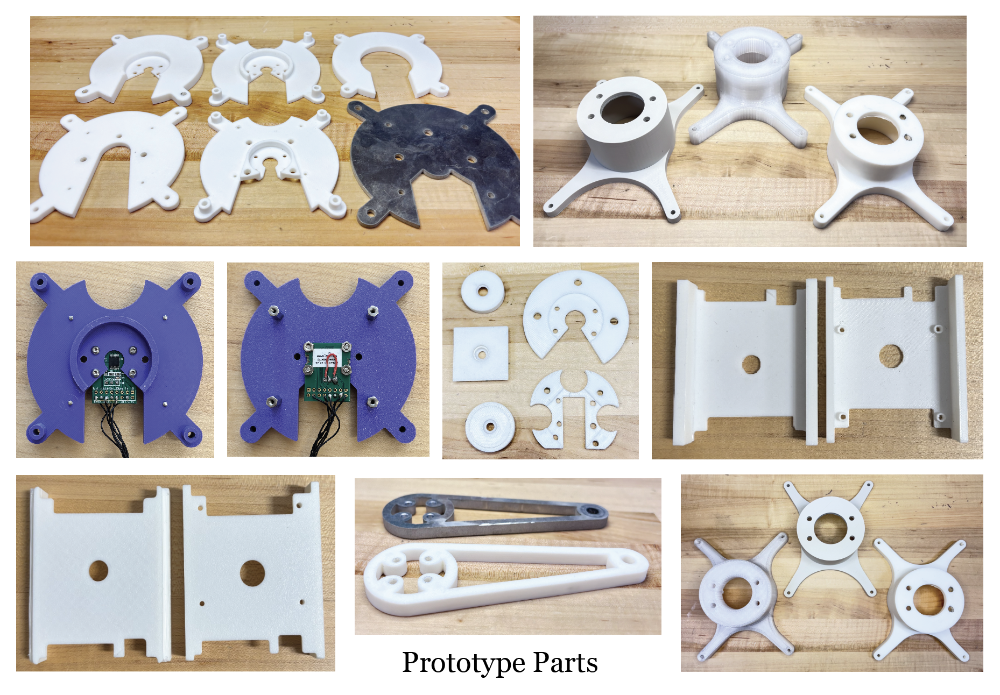

Legged Locomotion on Granular Media
Overview
This research investigates bio-inspired locomotion strategies for soft robotic systems navigating granular substrates. The focus is on understanding the mechanics of leg-ground interaction and developing adaptive control algorithms for enhanced mobility in challenging terrains such as sand, gravel, and loose soil.
By studying natural locomotion patterns from animals like lizards, crabs, and insects, we develop control strategies that enable soft robots to efficiently traverse granular environments while maintaining stability and energy efficiency.
Hardware Update
1. Mechanical Mounting
We used Tmotor U8 Lite L, BLDC motor, with peak torque of 3.4Nm. Did a lot of prototyping to mount the Encoder as precise gap between the encoder magnet and IC is very important for proper functioning otherwise it gives inaccurate readings or throw errors during calibration.
Performance Results